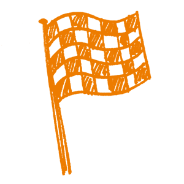

11. Recursos Educativos Abiertos
¿Qué son?
Los Recursos Educativos Abiertos (REA) están definidos como “materiales de enseñanza, aprendizaje e investigación en cualquier medio –digital o de otro tipo– que están en dominio público o que han sido publicados en Acceso Abierto, lo que posibilita el acceso, adaptación, y redistribución sin costo por cualquier persona sin restricciones o limitantes” (definición de la Fundación William y Flora Hewlett).
Los REA incluyen cursos completos, materiales de curso, libros de texto, videos en streaming, exámenes, imágenes, software y otras herramientas o técnicas usadas para apoyar el acceso al conocimiento.
Fundamentos
En muchos casos los REA se construyen a partir de hallazgos de investigación. Si eres practicante de la Ciencia Abierta, sería lógico que tus recursos educativos mantengan el nivel de apertura de tu propia investigación; de esa forma, otros instructores pueden usar tu material para crear nuevos recursos, o adaptar los que ya existen. De hecho, la creación de recursos educativos puede ser vista como un ciclo similar al de investigación: localizar, producir, adaptar, usar y compartir (wikieducator.org/OER_Handbook/educator/OER_Lifecycle).

Objetivos del aprendizaje
- Los participantes deben comprender la diferencia entre Recursos Educativos Abiertos y no-abiertos.
- La licencia es una parte esencial e indica cómo usar y combinar los REA fácilmente.
- Los participantes deben saber dónde encontrar y colocar los REA.
Componentes esenciales
Conocimiento y habilidades
La única forma en que los recursos educativos sean Recursos Educativos Abiertos es teniendo una licencia abierta. Sin embargo, no hay una guía clara para la elección de licencias, por tanto es preciso preguntar: ¿qué tipo de licencia es apropiada? En la práctica, las licencias más usadas por los REA son las Creative Commons (CC), en concreto con las siguientes variantes: CC0 (Dedicación de Dominio Público), CC-BY (Atribución) y CC-BY-SA (Atribución-Compartir Igual), las cuales pueden ser usadas por la mayoría de los REA; sin embargo, para la distribución de bases de datos bajo una licencia gratuita, Creative Commons no es lo ideal. En este caso se sugiere recurrir a una licencia abierta adecuada como ODbl, ODC-BY o PDDL para cumplir con la legalidad.
Es importante destacar la importancia de aclarar, en todos los casos, quién posee los derechos de autor, así como otros derechos relacionados y conexos respecto del producto de la investigación. El titular de los derechos es quien pude decidir eliminar las restricciones, si es que no son eliminadas en automático por las licencias. Por tanto, las licencias deben ser explicadas en detalle para dar crédito de manera apropiada a todos y cada uno de los autores, y crear verdaderos REA. Esto también incluye la combinación de diferentes tipos de licencia y sus implicaciones.
De hecho, la capacitación en esta materia debe ofrecer un panorama general de las plataformas REA, así como de su uso previsto. OpenCourseWare (OCW) es una de las primeras plataformas de recursos educativos abiertos, y uno de los precursores clave del movimiento de Recursos Educativos Abiertos, fue iniciado en Massachusetts Institute of Technology (MIT) en 2002. Actualmente Open Education Consortium ofrece material de todo el mundo, e incluso cursos bajo licencias gratuitas. Otros pioneros fueron UNESCO y la Fundación William and Flora Hewlett, que siguen comprometidos con los Recursos Educativos Abiertos. Ejemplos de otras plataformas son:
Creative Commons Search para imagen, audio y archivos de video
Open Education Consortium para material de cursos abiertos
OERCommons para recursos educativos
Preguntas, obstáculos y conceptos erróneos comunes
P: ¿Cómo se puede asegurar la calidad de los materiales?
R: Esto no siempre es posible. A la fecha no existe algo parecido a un sello de calidad para productos derivados de REA. Un posible indicio de calidad podrían ser los comentarios de los usuarios, la revisión por pares y la publicación de materiales en plataformas de instituciones establecidas, como por ejemplo las universidades. Al igual que sucede en los materiales derivados de textos impresos, la calidad no puede ser grantizada, lo cual podría desconcertar a muchos usuarios. No obstante, la autenticidad y adaptabilidad podría hablar del uso de los REA. Finalmente, es el propio usuario el que sabe si el material seleccionado es adecuado para el propósito previsto, y si su contenido es el adecuado.
Resultados del aprendizaje
Los participantes del proceso de capacitación podrán:
Distinguir entre materiales con derechos de autor y gratuitos.
Comprender en qué consiste la combinación de diferentes tipos de licencias, y sus consecuencias.
Encontrar, usar y crear Recursos Educativos Abiertos.
Lecturas adicionales
Butcher, Neil (2015): A Basic Guide to Open Educational Resources (OER): hdl.handle.net/11599/36
Miao, Fengchun; Mishra, Sanjaya; McGreal, Rory (2016): Open Educational Resources: Policy, Costs and Transformation: hdl.handle.net/11599/2306
OECD (2007): Giving Knowledge for Free: The Emergence of Open Educational Resources. OECD Publishing, Paris: /dx.doi.org/10.1787/9789264032125-en
Open Knowledge Foundation (2014): Open Education Handbook 2014: education.okfn.org/handbooks/handbook/